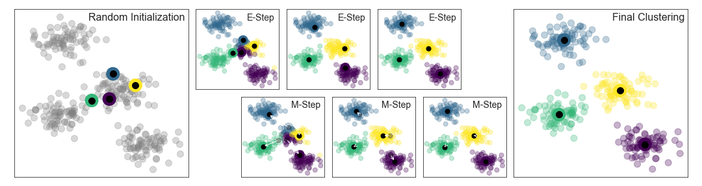

Bu sayfa orijinal kitap bölümünün eksiksiz Türkçe uyarlamasıdır — atlanan başlık/kod yoktur. Zor yerlerde ek ders notu ve 🧪 Şimdi deneyin kutuları vardır.
Orijinal (EN): 05.11 K-Means · Jupyter notebook
5.11 Derinlemesine: K-Means Kümeleme
Orijinal: 05.11 K-Means
Önceki bölümlerde boyut indirgeme için denetimsiz makine öğrenmesi modellerini inceledik. Şimdi denetimsiz makine öğrenmesinin bir başka sınıfına geçeceğiz: kümeleme algoritmaları. Kümeleme algoritmaları, verinin özelliklerinden yola çıkarak nokta gruplarının en uygun bölünmesini veya ayrık etiketlemesini öğrenmeye çalışır.
Scikit-Learn ve başka yerlerde birçok kümeleme algoritması vardır; ancak anlaşılması belki de en kolay olanı k-means kümeleme algoritmasıdır; sklearn.cluster.KMeans içinde uygulanmıştır.
Standart içe aktarmalarla başlayalım:
%matplotlib inline
import matplotlib.pyplot as plt
plt.style.use('seaborn-whitegrid')
import numpy as npload_sample_image örneği PIL gerektirir; tarayıcıda Pyodide ortamında PIL sınırlı olabilir. Tam renk sıkıştırma demosu için yerel Jupyter notebook kullanın.
k-Means'e Giriş
k-means algoritması, etiketsiz çok boyutlu bir veri kümesinde önceden belirlenmiş sayıda küme arar. Bunu, optimal kümelemenin basit bir tanımına dayanarak yapar:
- Küme merkezi, kümeye ait tüm noktaların aritmetik ortalamasıdır.
- Her nokta kendi küme merkezine, diğer küme merkezlerine olduğundan daha yakındır.
Bu iki varsayım k-means modelinin temelidir. Algoritmanın bu çözüme tam olarak nasıl ulaştığını yakında inceleyeceğiz; şimdilik basit bir veri kümesine bakıp k-means sonucunu görelim.
Önce dört ayrı blob içeren iki boyutlu bir veri kümesi üretelim. Bunun denetimsiz bir algoritma olduğunu vurgulamak için etiketleri görselleştirmeden çıkaracağız (aşağıdaki şekil):
from sklearn.datasets import make_blobs
X, y_true = make_blobs(n_samples=300, centers=4,
cluster_std=0.60, random_state=0)
plt.scatter(X[:, 0], X[:, 1], s=50);Gözle dört kümeyi seçmek nispeten kolaydır. k-means algoritması bunu otomatik yapar; Scikit-Learn'de tipik tahminci API'si kullanılır:
from sklearn.cluster import KMeans
kmeans = KMeans(n_clusters=4)
kmeans.fit(X)
y_kmeans = kmeans.predict(X)Sonuçları, veriyi bu etiketlere göre renklendirerek görselleştirelim (aşağıdaki şekil). k-means tahmincisinin belirlediği küme merkezlerini de çizeceğiz:
plt.scatter(X[:, 0], X[:, 1], c=y_kmeans, s=50, cmap='viridis')
centers = kmeans.cluster_centers_
plt.scatter(centers[:, 0], centers[:, 1], c='black', s=200);İyi haber şu: k-means algoritması (en azından bu basit durumda) noktaları kümelerine, gözle atayabileceğimiz şekle oldukça benzer atar. Ancak algoritmanın bu kümeleri bu kadar hızlı nasıl bulduğunu merak edebilirsiniz: küme atamalarının olası kombinasyon sayısı veri noktası sayısında üsteldir — tüm arama çok, çok maliyetli olurdu. Neyse ki böyle kapsamlı bir arama gerekmez: bunun yerine k-means'te tipik yaklaşım, beklenti–maksimizasyon (E–M) adı verilen sezgisel yinelemeli bir yöntemdir.
Sentetik blob verisinde k-means deneyin:
import numpy as np
from sklearn.cluster import KMeans
from sklearn.datasets import make_blobs
X, _ = make_blobs(n_samples=200, centers=3, random_state=0)
labels = KMeans(n_clusters=3, random_state=0).fit_predict(X)
print(np.bincount(labels))Beklenti–Maksimizasyon
Beklenti–maksimizasyon (E–M), veri biliminde çeşitli bağlamlarda karşımıza çıkan güçlü bir algoritmadır. k-means, algoritmanın özellikle basit ve anlaşılır bir uygulamasıdır; burada kısaca adımlarını göreceğiz. Kısaca E–M yaklaşımı şu prosedürden oluşur:
- Bazı küme merkezlerini tahmin edin.
- Yakınsayana kadar tekrarlayın:
- E-adımı: Noktaları en yakın küme merkezine atayın.
- M-adımı: Küme merkezlerini atanan noktaların ortalaması yapın.
Burada E-adımı veya beklenti adımı, her noktanın hangi kümeye ait olduğu beklentimizi güncellediğimiz için böyle adlandırılır. M-adımı veya maksimizasyon adımı, küme merkezlerinin konumunu tanımlayan bir uygunluk fonksiyonunu maksimize ettiğimiz için böyle adlandırılır — burada bu maksimizasyon, her kümedeki verinin basit ortalaması alınarak yapılır.
Bu algoritma hakkındaki literatür geniştir; tipik koşullar altında E- ve M-adımının her tekrarı küme özelliklerinin daha iyi bir tahminini verir. Algoritmayı aşağıdaki şekilde görselleştirebiliriz. Buradaki başlangıç için kümeler yalnızca üç yinelemede yakınsar. (Etkileşimli sürüm için çevrimiçi ek koduna bakın.)

k-means algoritması birkaç satır kodla yazılabilecek kadar basittir. Aşağıdaki çok temel bir uygulamadır (aşağıdaki şekil):
from sklearn.metrics import pairwise_distances_argmin
def find_clusters(X, n_clusters, rseed=2):
# 1. Randomly choose clusters
rng = np.random.RandomState(rseed)
i = rng.permutation(X.shape[0])[:n_clusters]
centers = X[i]
while True:
# 2a. Assign labels based on closest center
labels = pairwise_distances_argmin(X, centers)
# 2b. Find new centers from means of points
new_centers = np.array([X[labels == i].mean(0)
for i in range(n_clusters)])
# 2c. Check for convergence
if np.all(centers == new_centers):
break
centers = new_centers
return centers, labels
centers, labels = find_clusters(X, 4)
plt.scatter(X[:, 0], X[:, 1], c=labels,
s=50, cmap='viridis');İyi test edilmiş uygulamalar kaputun altında biraz daha fazlasını yapar; ancak önceki fonksiyon E–M yaklaşımının özünü verir.
Beklenti–maksimizasyon algoritmasını kullanırken dikkat edilmesi gereken birkaç uyarı vardır:
Küresel en iyi sonuç garanti edilmez
Öncelikle, E–M prosedürü her adımda sonucu iyileştirmeyi garanti etse de, küresel en iyi çözüme ulaşacağına dair güvence yoktur. Örneğin basit prosedürümüzde farklı bir rastgele tohum kullanırsak, başlangıç tahminleri kötü sonuçlara yol açabilir (aşağıdaki şekil):
centers, labels = find_clusters(X, 4, rseed=0)
plt.scatter(X[:, 0], X[:, 1], c=labels,
s=50, cmap='viridis');E–M prosedürü her adımda sonucu iyileştirmeyi garanti etse de, küresel en iyi çözüme ulaşacağına dair güvence yoktur. Bu yüzden algoritmanın birden fazla başlangıç tahminiyle çalıştırılması yaygındır; Scikit-Learn bunu varsayılan olarak yapar (n_init parametresi, varsayılan 10).
Küme sayısı önceden seçilmelidir
k-means'in bir başka yaygın zorluğu, kaç küme beklediğinizi söylemeniz gerekmesidir: küme sayısını veriden öğrenemez. Örneğin algoritmaya altı küme tanımlamasını istersek, en iyi altı kümeyi mutlu bir şekilde bulur (aşağıdaki şekil):
labels = KMeans(6, random_state=0).fit_predict(X)
plt.scatter(X[:, 0], X[:, 1], c=labels,
s=50, cmap='viridis');Sonucun anlamlı olup olmadığı kesin yanıtlanması zor bir sorudur; burada daha fazla ele almayacağımız sezgisel bir yaklaşım silhouette analizi adını alır.
Alternatif olarak, küme sayısına göre uygunluğu daha iyi ölçen daha karmaşık bir kümeleme algoritması (ör. Gauss karışımları; bkz. 5.12 Gauss Karışımları) veya uygun küme sayısını seçebilen bir algoritma (DBSCAN, mean-shift, affinity propagation — sklearn.cluster alt modülünde) kullanılabilir.
k-means doğrusal küme sınırlarıyla sınırlıdır
k-means'in temel model varsayımları (noktalar kendi küme merkezlerine diğerlerinden daha yakındır), kümelerin karmaşık geometrileri olduğunda algoritmanın sık sık etkisiz kalmasına yol açar. Özellikle k-means kümeleri arasındaki sınırlar her zaman doğrusaldır; daha karmaşık sınırlarda başarısız olur. Aşağıdaki veriyi ve tipik k-means yaklaşımının bulduğu küme etiketlerini düşünün (aşağıdaki şekil):
from sklearn.datasets import make_moons
X, y = make_moons(200, noise=.05, random_state=0)labels = KMeans(2, random_state=0).fit_predict(X)
plt.scatter(X[:, 0], X[:, 1], c=labels,
s=50, cmap='viridis');Bu durum 5.7 Destek Vektör Makineleri bölümündeki tartışmayı anımsatır: veriyi doğrusal ayrımın mümkün olduğu daha yüksek boyuta çevirmek için çekirdek dönüşümü kullanmıştık. Aynı numarayı k-means'in doğrusal olmayan sınırlar keşfetmesine izin vermek için kullanabiliriz.
Bu çekirdekli k-means'in bir sürümü Scikit-Learn'de SpectralClustering tahmincisi içinde uygulanmıştır. En yakın komşu grafiğini kullanarak verinin daha yüksek boyutlu temsilini hesaplar, ardından k-means ile etiketler atar (aşağıdaki şekil):
from sklearn.cluster import SpectralClustering
model = SpectralClustering(n_clusters=2, affinity='nearest_neighbors',
assign_labels='kmeans')
labels = model.fit_predict(X)
plt.scatter(X[:, 0], X[:, 1], c=labels,
s=50, cmap='viridis');Bu çekirdek dönüşümü yaklaşımıyla, çekirdekli k-means kümeler arasındaki daha karmaşık doğrusal olmayan sınırları bulabilir.
k-means çok sayıda örnekte yavaş olabilir
k-means'in her yinelemesi veri kümesindeki her noktaya erişmek zorunda olduğundan, örnek sayısı arttıkça algoritma görece yavaşlayabilir. Her yinelemede tüm veriyi kullanma gereksinimi gevşetilebilir mi diye düşünebilirsiniz; örneğin her adımda küme merkezlerini güncellemek için verinin bir alt kümesini kullanmak. Bu, mini-batch k-means algoritmalarının fikridir; bunlardan biri sklearn.cluster.MiniBatchKMeans içinde uygulanmıştır. Arayüz standart KMeans ile aynıdır; tartışmaya devam ederken bir örneğini göreceğiz.
Örnekler
Algoritmanın bu sınırlamalarına dikkat ederek k-means'i çeşitli durumlarda kullanabiliriz. Şimdi birkaç örneğe bakalım.
Örnek 1: Rakamlarda k-Means
Başlangıç olarak 5.8 Rastgele Ormanlar ve 5.9 Temel Bileşen Analizi bölümlerinde gördüğümüz basit rakam verisine k-means uygulayalım. Orijinal etiket bilgisini kullanmadan benzer rakamları tanımlamaya çalışacağız; bu, a priori etiket bilginiz olmayan yeni bir veri kümesinden anlam çıkarmanın ilk adımına benzer olabilir.
Veri kümesini yükleyip kümeleri bulacağız. Digits veri kümesi 1.797 örnek ve 64 öznitelikten oluşur; her öznitelik 8×8 görüntüdeki bir pikselin parlaklığıdır:
from sklearn.datasets import load_digits
digits = load_digits()
digits.data.shapeKümeleme daha önce yaptığımız gibi yapılabilir:
kmeans = KMeans(n_clusters=10, random_state=0)
clusters = kmeans.fit_predict(digits.data)
kmeans.cluster_centers_.shapeSonuç 64 boyutta 10 kümedir. Küme merkezlerinin kendileri 64 boyutlu noktalardır ve küme içindeki "tipik" rakamı temsil eder. Bu küme merkezlerinin nasıl göründüğüne bakalım (aşağıdaki şekil):
fig, ax = plt.subplots(2, 5, figsize=(8, 3))
centers = kmeans.cluster_centers_.reshape(10, 8, 8)
for axi, center in zip(ax.flat, centers):
axi.set(xticks=[], yticks=[])
axi.imshow(center, interpolation='nearest', cmap=plt.cm.binary)k-means etiketler hakkında hiçbir şey bilmediği için 0–9 etiketleri permüte olabilir. Her öğrenilen küme etiketini kümelerde bulunan gerçek etiketlerle eşleştirerek düzeltebiliriz:
Digits verisinde k-means küme sayısını değiştirin:
from sklearn.datasets import load_digits
from sklearn.cluster import KMeans
digits = load_digits()
km = KMeans(n_clusters=10, random_state=0, n_init=10)
clusters = km.fit_predict(digits.data)
print("Küme boyutları:", [sum(clusters == i) for i in range(10)])from scipy.stats import mode
labels = np.zeros_like(clusters)
for i in range(10):
mask = (clusters == i)
labels[mask] = mode(digits.target[mask])[0]Denetimsiz kümelemenin veride benzer rakamları bulmada ne kadar başarılı olduğunu kontrol edebiliriz:
from sklearn.metrics import accuracy_score
accuracy_score(digits.target, labels)Basit bir k-means algoritmasıyla girdi rakamlarının %80'i için doğru gruplamayı bulduk! Bunun karışıklık matrisine bakalım (aşağıdaki şekil):
from sklearn.metrics import confusion_matrix
import seaborn as sns
mat = confusion_matrix(digits.target, labels)
sns.heatmap(mat.T, square=True, annot=True, fmt='d',
cbar=False, cmap='Blues',
xticklabels=digits.target_names,
yticklabels=digits.target_names)
plt.xlabel('true label')
plt.ylabel('predicted label');Daha önce görselleştirdiğimiz küme merkezlerinden beklenebileceği gibi asıl karışıklık sekizler ve birler arasındadır. Yine de k-means ile, bilinen etiketlere referans olmadan esasen bir rakam sınıflandırıcısı kurabileceğimizi gösterir!
Eğlence için biraz daha ileri gidelim. 5.10 Manifold Öğrenme bölümünde bahsedilen t-dağıtımlı stokastik komşu gömme (t-SNE) algoritmasını, k-means öncesinde veriyi ön işlemek için kullanabiliriz. t-SNE, kümeler içindeki noktaları koruma konusunda özellikle başarılı doğrusal olmayan bir gömme algoritmasıdır. Nasıl yaptığına bakalım:
from sklearn.manifold import TSNE
# Project the data: this step will take several seconds
tsne = TSNE(n_components=2, init='random',
learning_rate='auto',random_state=0)
digits_proj = tsne.fit_transform(digits.data)
# Compute the clusters
kmeans = KMeans(n_clusters=10, random_state=0)
clusters = kmeans.fit_predict(digits_proj)
# Permute the labels
labels = np.zeros_like(clusters)
for i in range(10):
mask = (clusters == i)
labels[mask] = mode(digits.target[mask])[0]
# Compute the accuracy
accuracy_score(digits.target, labels)Bu, etiketleri kullanmadan %94 sınıflandırma doğruluğu. Denetimsiz öğrenmenin dikkatli kullanıldığında gücü budur: veri kümesinden elle veya gözle çıkarması zor bilgileri çıkarabilir.
Örnek 2: Renk Sıkıştırma için k-Means
Kümelemenin ilginç uygulamalarından biri görüntülerde renk sıkıştırmasıdır (bu örnek Scikit-Learn'in "Color Quantization Using K-Means" örneğinden uyarlanmıştır). Örneğin milyonlarca rengi olan bir görüntünüz olduğunu düşünün. Çoğu görüntüde renklerin büyük kısmı kullanılmaz; birçok piksel benzer veya özdeş renklere sahiptir.
Aşağıdaki şekilde Scikit-Learn datasets modülünden bir görüntü düşünün (bunun çalışması için PIL Python paketinin kurulu olması gerekir):
# Note: this requires the PIL package to be installed
from sklearn.datasets import load_sample_image
china = load_sample_image("china.jpg")
ax = plt.axes(xticks=[], yticks=[])
ax.imshow(china);Görüntü kendisi (yükseklik, genişlik, RGB) boyutunda üç boyutlu bir dizide saklanır; kırmızı/mavi/yeşil katkılar 0–255 arası tamsayıdır:
china.shapeBu pikselleri üç boyutlu renk uzayında bir nokta bulutu olarak görebiliriz. Veriyi [n_samples, n_features] biçimine getirip renkleri 0–1 arasına ölçekleriz:
data = china / 255.0 # use 0...1 scale
data = data.reshape(-1, 3)
data.shapeBu pikselleri renk uzayında görselleştirebiliriz; verimlilik için 10.000 piksellik bir alt küme kullanıyoruz (aşağıdaki şekil):
def plot_pixels(data, title, colors=None, N=10000):
if colors is None:
colors = data
# choose a random subset
rng = np.random.default_rng(0)
i = rng.permutation(data.shape[0])[:N]
colors = colors[i]
R, G, B = data[i].T
fig, ax = plt.subplots(1, 2, figsize=(16, 6))
ax[0].scatter(R, G, color=colors, marker='.')
ax[0].set(xlabel='Red', ylabel='Green', xlim=(0, 1), ylim=(0, 1))
ax[1].scatter(R, B, color=colors, marker='.')
ax[1].set(xlabel='Red', ylabel='Blue', xlim=(0, 1), ylim=(0, 1))
fig.suptitle(title, size=20);plot_pixels(data, title='Input color space: 16 million possible colors')Şimdi piksel uzayında k-means kümelemesiyle 16 milyon rengi 16 renge indirelim. Çok büyük bir veri kümesiyle uğraştığımız için standart k-means'ten çok daha hızlı sonuç veren mini-batch k-means kullanacağız (aşağıdaki şekil):
from sklearn.cluster import MiniBatchKMeans
kmeans = MiniBatchKMeans(16)
kmeans.fit(data)
new_colors = kmeans.cluster_centers_[kmeans.predict(data)]
plot_pixels(data, colors=new_colors,
title="Reduced color space: 16 colors")Sonuç, her piksele en yakın küme merkezinin renginin atandığı orijinal piksellerin yeniden renklendirilmesidir. Bu yeni renkleri piksel uzayı yerine görüntü uzayında çizersek etkiyi görürüz (aşağıdaki şekil):
china_recolored = new_colors.reshape(china.shape)
fig, ax = plt.subplots(1, 2, figsize=(16, 6),
subplot_kw=dict(xticks=[], yticks=[]))
fig.subplots_adjust(wspace=0.05)
ax[0].imshow(china)
ax[0].set_title('Original Image', size=16)
ax[1].imshow(china_recolored)
ax[1].set_title('16-color Image', size=16);Sağ panelde kesinlikle ayrıntı kaybı var; ancak genel görüntü hâlâ kolayca tanınır. Ham veriyi saklamak için gereken bayt açısından sağdaki görüntü yaklaşık 1 milyonluk bir sıkıştırma faktörü sağlar! Bu tür yaklaşım JPEG gibi özel görüntü sıkıştırma şemalarının kalitesine ulaşmaz; ancak k-means gibi denetimsiz yöntemlerle kutu dışında düşünmenin gücünü gösterir.